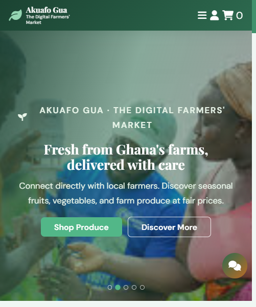
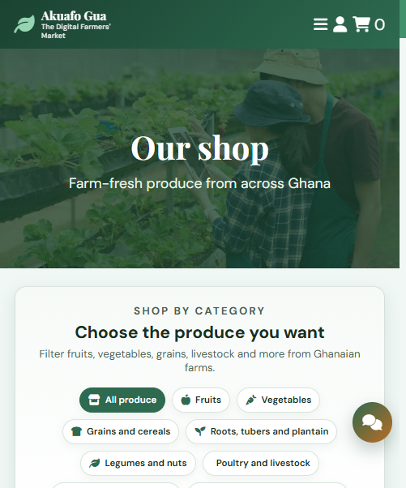
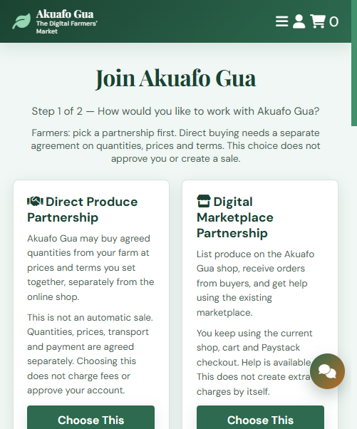
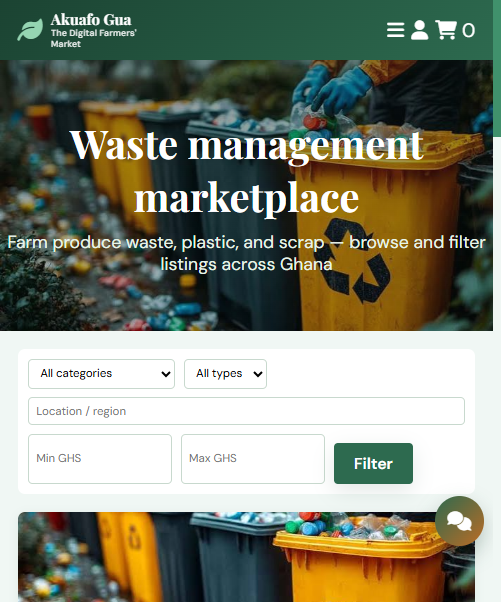

Ghana · Agriculture · Circular economy
AKUAFO GUA
The Digital Farmers' Market
From Farm to Market. From Waste to Value.
A digital agricultural and circular-economy marketplace connecting Ghanaian farmers, buyers, collectors and creators.
The opportunity
What if every farmer could reach more buyers?
What if waste could become another source of income? What if one ecosystem could answer both?
Farmers → Buyers → Delivery → Waste Recovery → Recycling → Upcycling → New Products → Buyers
The problem
Farmers struggle to find reliable buyers
The second problem
Waste is an untapped resource
Our solution
One platform connecting Ghana's farms, markets and circular economy.
Akuafo Gua is a digital marketplace that connects Ghanaian farmers and businesses directly with customers while transforming waste and recovered materials into new economic opportunities through recycling and upcycling.
We connect supply to demand, reduce agricultural waste, create new markets for recovered materials, and help turn local resources into sustainable income.
How it works
Three loops. One marketplace.
Farmers list harvests from a phone
Riders move produce to the buyer
Collectors sort recoverable waste
The ecosystem
Everyone meets in the middle
GUA
Partnership
Two ways to partner, or both
Roles: customer / waste generator · farmer · waste collector · delivery rider · processor / buyer · upcycling seller
Who we serve
Buyers across Ghana's food system
Why us
Why Akuafo Gua?
Already built
Technology already in place
Payments: Customer → Paystack → Marketplace → Seller. SMS: order, delivery, seller, rider, collection and account notifications.
Live web marketplace on Railway
The product
We have built it. A working marketplace already exists.





Traction
Current traction
Replace these placeholders with verified figures before presenting.
Revenue
Multiple revenue streams
All streams are a planned / scalable revenue opportunity unless confirmed. [INSERT VERIFIED DATA]
Go-to-market
Build outward, phase by phase
Build supply. Build demand. Build trust.
Funding supports digital, social, TV and billboard advertising, farmer outreach, partnerships and community education.
Impact
Social and economic impact
Vision
Ghana's leading digital ecosystem for agricultural commerce and circular economy
A Ghana where no farmer struggles to find a market and valuable waste is no longer treated as worthless.
Mission: Connect Ghanaian farmers and businesses to reliable markets, reduce agricultural and material waste, create income opportunities, and build a digital circular economy where local resources continuously create value.
The ask
Funding required
Capital will not only build technology. It will activate the marketplace.
12 months
12-month growth targets
Partners
Let's build the ecosystem together
Call to action
The next harvest should not become the next waste story.
Let's connect Ghana's farmers, businesses, consumers and circular economy through one digital marketplace.
AKUAFO GUA
The Digital Farmers' Market
From Farm to Market.
From Waste to Value.
Founder & CEO
Co-Founder
ekuafo-gua-app-production.up.railway.app · Takoradi, Ghana
Email: · Phone: · Social: